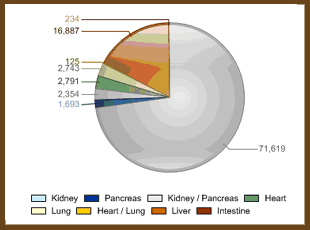

INDUSTRY
The market for Regenerative Medicine is focused on initial areas of interest. They include: blood vessels, livers, kidneys, reproductive organs, muscle tissue, and skin. Kidneys are the most sought after transplant procedure with 71,619 people on the waiting list.
Currently the options for kidney replacement are transplants from organ donors. The lack of available kidneys resulted in the death of 3,916 patients in 2006 alone. Patients who receive a transplant risk complications because the transplanted organ may be rejected. With our regenerated organ from your cells the concern for rejection is minmized almost to zero, saving you money in medicine costs and fewer follow up vists, along with making the procedure even safer.
QUICK TURN AROUND
The organ we regenerate for you is completed in about a month. This extremely quick turn around allows you to not wory about the current waiting list many must make through before recieving their organ.